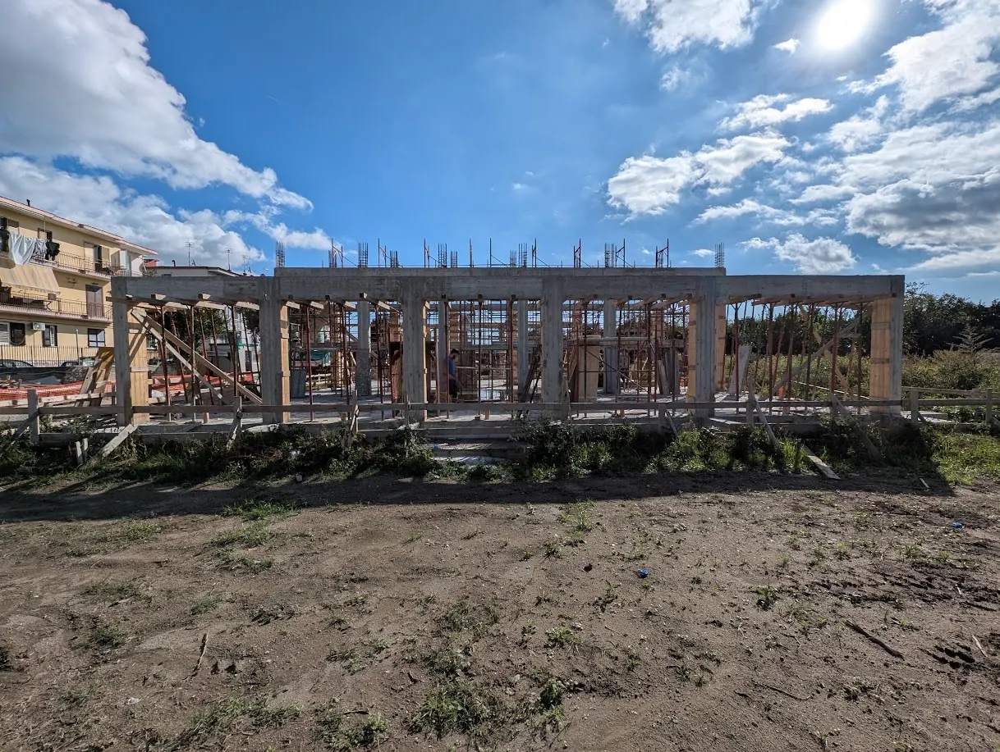
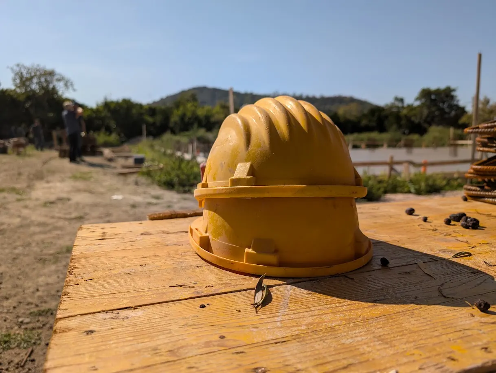
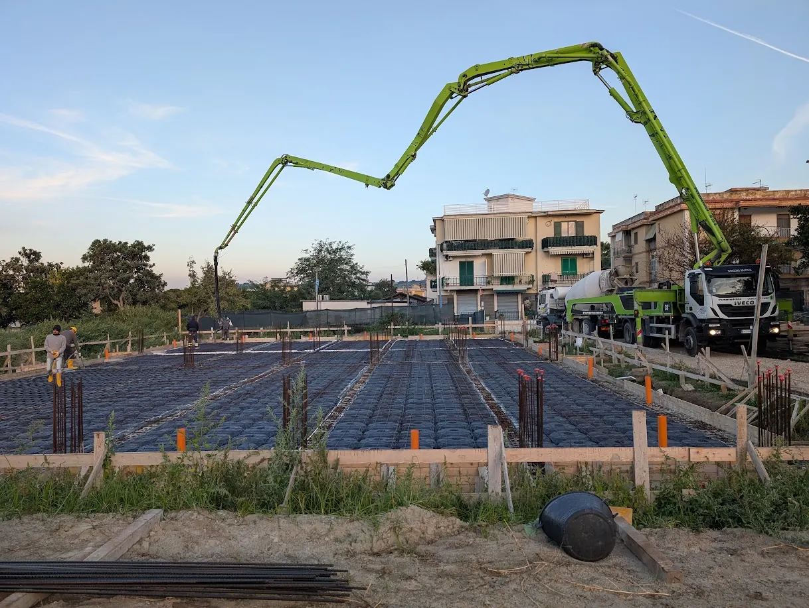
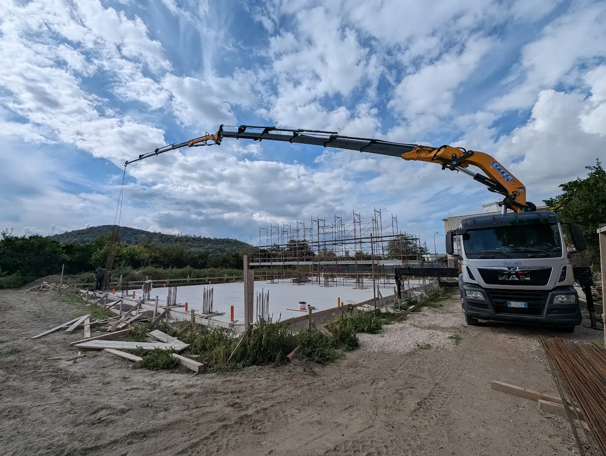

Un centro nel cuore di Pozzuoli.
Stiamo costruendo uno spazio aperto alla città: un luogo dove le persone possano incontrare Dio, trovare amicizia e ricevere aiuto concreto.
Più di un edificio: una casa per la città
Sognamo un luogo dove chiunque si senta a casa: famiglie, ragazzi, anziani, chi è solo e chi sta attraversando un momento difficile.
Il centro sarà la nuova casa della chiesa Fiume di Vita, ma soprattutto uno spazio aperto a Pozzuoli, sette giorni su sette.

Trasformati da Cristo per amare come Cristo
In pochi minuti, il sogno del Centro Cristiano “Fiume di Vita”: perché lo stiamo costruendo e cosa vogliamo che diventi per Pozzuoli.
Spazi pensati per le persone
Sala per il culto
Un luogo accogliente per lodare Dio insieme ogni domenica e per i grandi eventi.
Spazi per bambini e ragazzi
Aule e aree dedicate alla scuola domenicale, ai giovanissimi e alle attività educative.
Aiuto concreto
Un punto di riferimento per sostenere le famiglie in difficoltà del territorio.
Accoglienza
Spazi per incontrarsi, prendere un caffè e conoscersi davvero.
Corsi e attività
Lingue, incontri, momenti formativi aperti a tutto il quartiere.
Per tutta la città
Una casa aperta a Pozzuoli, per servire e benedire chi ci vive.
Mattone dopo mattone
Segui le tappe della costruzione. Aggiorneremo questa pagina a ogni passo avanti.
-
Si gettano le fondamenta
Dopo tanta preghiera, il cantiere parte: arriva il calcestruzzo per la base del nuovo centro.

-
Le prime strutture
Gru e camion al lavoro: iniziano a comparire i primi elementi della struttura.

-
Si alzano i pilastri
Il centro comincia a vedersi davvero, con i pilastri che disegnano gli spazi.
-
Prende forma la struttura
Ponteggi, travi e un grande scheletro: il sogno diventa sempre più concreto.

-
Copertura, impianti e finiture
Le prossime tappe per rendere il centro pronto ad accogliere la città.
-
L'inaugurazione
Apriremo le porte a Pozzuoli. Sarà una festa, e vogliamo che ci sia anche tu.
Come puoi partecipare
Prega con noi
Ogni passo di questo progetto è nato in preghiera. Unisciti a noi nel pregare per il centro e per la città.
Dai una mano
Hai tempo, competenze o voglia di aiutare? Ogni contributo di lavoro e di idee è prezioso.
Resta aggiornato
Scrivici per ricevere notizie e foto dal cantiere e l'invito all'inaugurazione.